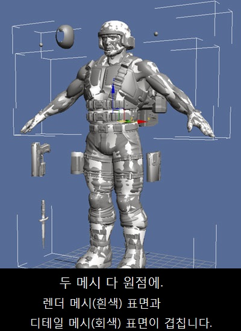
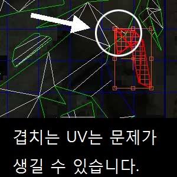
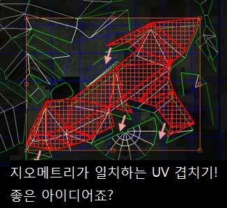

UDN
Search public documentation:
ImportingSkeletalMeshTutorialKR
English Translation
日本語訳
中国翻译
Interested in the Unreal Engine?
Visit the Unreal Technology site.
Looking for jobs and company info?
Check out the Epic games site.
Questions about support via UDN?
Contact the UDN Staff
日本語訳
中国翻译
Interested in the Unreal Engine?
Visit the Unreal Technology site.
Looking for jobs and company info?
Check out the Epic games site.
Questions about support via UDN?
Contact the UDN Staff
스켈레탈 메시 임포트하기 튜토리얼
문서 요약: 애니메이티드 메시와 애니메이션을 언리얼 엔진으로 들여오는 법에 대한 튜토리얼입니다. 문서 변경내역: Chris Sturgill (Demiurge Studios) 작성. Laurent Delayen 업데이트. 홍성진 번역.
서론
언리얼 엔진 3의 아트 파이프라인에 대한 안내서입니다.
노멀 맵
언리얼 엔진 3 에서는 노멀 맵을 활용할 수 있습니다. 노멀 맵은 베리 하이 폴리곤 메시에서 지오메트리 디테일을 읽은 다음 결과를 UV 매핑된 텍스처로 저장하여 생성됩니다.
 생성된 노멀 맵은 그 후 UE3의 로우 폴리곤 메시에 적용됩니다. 최종 결과는 폴리곤 측면에서 볼때 실제보다 훨씬 복잡해 보이는 메시가 됩니다. 로우 폴리곤 메시는 그 후 릭되고(rigged) 애니메이트되어 UE3로 익스포트 됩니다.
생성된 노멀 맵은 그 후 UE3의 로우 폴리곤 메시에 적용됩니다. 최종 결과는 폴리곤 측면에서 볼때 실제보다 훨씬 복잡해 보이는 메시가 됩니다. 로우 폴리곤 메시는 그 후 릭되고(rigged) 애니메이트되어 UE3로 익스포트 됩니다.
익스포트할 콘텐츠 준비하기
이 시점에서 여러분은 하이 폴리곤 메시와 로우 폴리곤 메시를 하나씩 공간 내의 같은 위치에 (아마도 원점에) 가지고 있어야 합니다. 로우 폴리곤 메시를 언래핑하여 그 UV 를 제대로 펼쳐놔야 합니다.

SHTools의 처리는 로우 폴리곤 메시 펼치기에 기반을 두고 있기 때문에, 이 과정은 매우 중요합니다. 이 과정은 또한 3D Studio Max의 새 버전에서도 실행될 수 있습니다.UV에 관해서
노말 매핑 과정은 펼치기에 대해 특별한 배려를 필요로 합니다. 최선의 결과는 UV가 오버랩되지 않도록 하는 것입니다. 관련 도형들이 지오메트리학적으로 똑같다면 UV들을 쌓아놓아도 괜찮습니다. 예를 들면, 아래의 그림에서처럼 메시의 다른 부분들을 오버랩하는 것은 좋지 않습니다:

아래의 스크린샷에서처럼 좌우가 서로 대칭인 지오메트리 도형 같은 경우에는 UV들을 쌓아놓아도 좋습니다:
하이 폴리곤 메시의 경우에는 이러한 제약이 필요 없습니다. 하이 폴리곤 메시는 SHTools를 처리하기 위해 텍스처될 필요가 전혀 없기 때문입니다.노멀 맵의 생성
하이 폴리곤 메시로부터 노멀 맵을 생성해내는 과정은 SHTools 플러그인, 또는 3DStudio Max, Maya 혹은 Softimage XSI의 도구를 사용해서 다루어집니다. 이 튜토리얼에서는 이를 단계별로 간단히 소개하겠습니다. SHTools의 메시 처리기 및 서버는 Max/Maya/XSI 의 노멀 매핑 도구 보다 먼저 탄생했다는 점을 기억하십시오. 저희는 현재 노멀 맵을 만들 때 대개 이 도구들을 사용하고 있습니다. 노멀 맵을 작성할 때는 Maya 등 3D 모델링 패키지를 사용할 것을 강력히 추천합니다.애니메이트된 메시 및 애니메이션 익스포트
메시 익스포트의 자세한 절차는 메시 익스포트 튜토리얼 페이지에 수록되어 있습니다. 리그된 로우 폴리곤 메시와 애니메이션 익스포트 과정은 ActorXMaxTutorial 에서 상세하게 다루고 있습니다. 주: (위에서 언급한)SHTools를 통해 UE3용으로 노멀 맵을 익스포트 하는 것은 현재 지원되지 않습니다. 그러나 애니메이션 파이프라인은 변경되지 않았기 때문에 Maya로부터 애니메이션 익스포트는 현재 지원되고 있으며 ActorXMayaTutorial에 상세하게 다루어져 있습니다.
엔진에 콘텐츠 들여오기
모든 것이 익스포트 되고 준비가 완료되면 언리얼 에디터를 통해 애셋들을 엔진에 임포트할 수 있게 됩니다. 메시 임포트의 자세한 절차는 메시 임포트 튜토리얼 페이지에 수록되어 있습니다. 일반 브라우저와 패키지 시스템에 관한 자세한 정보는 일반 브라우저 참조와 언리얼 패키지 페이지를 참고 하십시오. 텍스처 임포트와 머티리얼 작성하기에 관한 것은 머티리얼 튜토리얼 페이지에서 다룹니다.
스켈레탈 임포트
PSK 파일들을 언리얼 엔진 내로 임포트에 관한 것은 ActorX 페이지를 참고 하십시오
애니메이션 임포트
언리얼 엔진으로 애니메이션 PSA 파일 임포트에 관한 정보는 애니메이션 임포트 튜토리얼을 참고 하십시오.
스켈레탈 메시 액터의 사용
레벨에 스켈레탈 메시 액터를 놓는 법은 매우 간단합니다.
- 일반 브라우저에서 스켈레탈 메시를 선택합니다.
- 레벨에 우클릭, '액터 추가'로 간 다음 'SkeletalMesh 추가'를 선택합니다. 레벨에 메시가 생기는 게 보입니다.
유용한 콘솔 명령어들
show bones - 스켈레탈 메시의 렌더에 사용된 본 위치를 표시합니다.
그밖의 유용한 명령어들에 관한 것은 콘솔 명령어 페이지를 참고 하십시오.